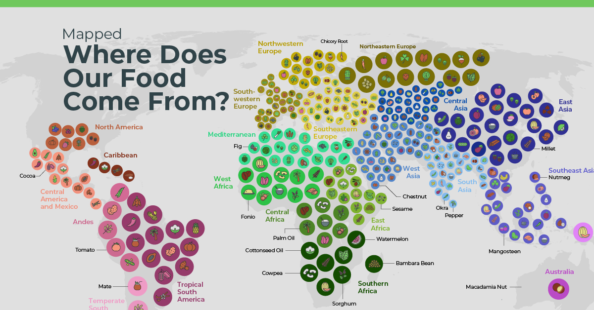

History of Food

Food has been an important part of human history for thousands of years. People have always depended on food not only for survival, but also as a way to bring families and communities together. As people traveled and settled in different parts of the world, they developed their own ingredients, cooking methods, and traditional dishes.
The food we eat today is strongly connected to the countries and regions where it originated. Climate, geography, available ingredients, and local traditions all influenced the way people prepared their meals. This is why different countries have developed unique flavors and cooking styles that are still enjoyed today.
Over time, food has traveled across borders through trade, migration, and cultural exchange. Many popular dishes have changed as people introduced new ingredients and cooking techniques to other cultures. Today, we can enjoy foods from many different countries without having to travel to where they originally came from.
Popular Foods Around the World
| Dish | Country | Region | Main Ingredients | Type of Food | Commonly Served |
|---|---|---|---|---|---|
| Biryani | India | South Asia | Rice, Spices, Chicken | Main Course | Festivals and Celebrations |
| Pizza | Italy | Europe | Flour, Tomato, Cheese | Main Course | Meals and Gatherings |
| Sushi | Japan | East Asia | Rice, Fish, Seaweed | Main Course | Meals and Special Occasions |
| Tacos | Mexico | North America | Tortilla, Meat, Vegetables | Main Course | Everyday Meals and Celebrations |
| Paella | Spain | Europe | Rice, Seafood, Vegetables | Main Course | Family Gatherings |
| Pad Thai | Thailand | Southeast Asia | Noodles, Vegetables, Peanuts | Main Course | Everyday Meals |
| Hamburger | United States | North America | Bread, Beef, Lettuce | Main Course | Casual Meals |
| Butter Chicken | India | South Asia | Chicken, Tomato, Butter, Spices | Main Course | Family Meals and Restaurants |